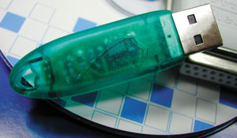
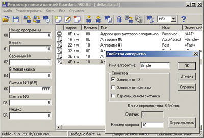

Галина Большова
Реалии российского рынка ПО таковы, что большинство разработчиков коммерческих продуктов всерьез озабочены проблемами пиратства, несмотря на то, что практически все так или иначе защищают свои продукты. И для этого есть немало способов, выбираемых владельцем в зависимости от характера приложения, его стоимости, условий распространения и некоторых других особенностей. Однако всегда к такой защите предъявляются два основных требования: надежность и "необременительность", или "незаметность" ее для работы ПО. Ведь любые дополнительные нагрузки на компьютер могут существенно повлиять на быстродействие, функциональность, удобство использования защищенного приложения. Что же касается надежности (стойкости), то этот показатель определяется отношением стоимости взлома (за счет увеличения экономических и временных затрат) к цене легальной копии - чем оно больше, тем выше стойкость к взлому.
Выбирая инструмент для защиты своей интеллектуальной собственности, необходимо понимать, что абсолютной защиты не бывает. А потому принято говорить только об адекватности защиты от угроз или о прогнозируемом времени преодоления защиты. Этим принципом и следует руководствоваться при разработке и применении средств защиты.
Данная статья посвящена одной из технологий, свойства которой позволяют ей "незримо" охранять "подведомственные объекты" и успешно противостоять современным методам взлома защиты; при этом задействованные в защите механизмы легко адаптировать к стоимости ПО. Разработчики технологии, специалисты компании "Актив", дали ей "говорящее" имя - Stealth.
Краеугольный камень Stealth
Основа технологии Stealth - использование микропроцессора, точнее, микроконтроллера, представляющего собой микропроцессор со встроенной памятью и достаточно широким набором команд. По сути Stealth базируется на микроЭВМ уровня IBM PC XT.
В память микроконтроллера "зашивается" специальный набор команд, называемый микропрограммой. В сочетании с дескрипторами (каждый из которых описывает свой аппаратный алгоритм) микропрограмма реализует множество аппаратных алгоритмов вида Y = f(X). При этом, согласно идеологии работы такого микроконтроллера, его микропрограмма недоступна ни для каких внешних воздействий. Ее практически невозможно считать или внести изменения. Микроконтроллер - это "черный ящик", и все происходящие в нем процессы полностью скрыты. Такую "невидимку" разработчики компании "Актив" (http://www.guardant.ru) использовали для создания защиты на базе электронных ключей - Stealth*.
* Технология Stealth, описанная в статье, применяется в ключах Guardant Stealth и Guardant Net. Технология, используемая в ключах Guardant Fidus, представляет собой "подмножество" Stealth, и они не поддерживают некоторых функций первых двух типов ключей.
Ядром защиты, ее аппаратной частью является сам электронный ключ (рис. 1), а программную часть составляет специальное ПО для работы с ключами. В его состав входят инструменты для программирования ключей, утилиты установки защиты и диагностики, драйверы ключей и т. д.
|  | Рис. 1. Электронные Stealth-ключи подключаются через LPT- или USB-порт.
|
Аппаратные алгоритмы позволяют преобразовать любую информацию, используемую защищенным приложением, и при правильной организации защиты делают бессмысленными действия хакеров по удалению из тела приложения вызовов функций API: выполнить обратное преобразование данных становится невозможно. Кроме того, уже сам факт наличия аппаратных алгоритмов настолько усложняет логику работы электронных ключей, что создание их эмулятора превращается для хакеров в весьма нетривиальную задачу (но только если алгоритмы используются грамотно и система защиты хорошо проработана).
Один Stealth-ключ может содержать до 18 различных аппаратных алгоритмов, любой из которых допустимо использовать в каждый момент времени по необходимости. Подчеркнем, что это именно различные алгоритмы, а не несколько вариантов одного и того же. Защиту любого приложения способны обеспечить как все имеющиеся в ключе алгоритмы (например, какая-то часть данных кодируется первым алгоритмом, какая-то - вторым и т. д.), так и любой их набор. При прочих равных условиях данный факт усложняет (а значит, и удорожает) задачу взлома защиты.
Но и это еще не все. Stealth-ключи позволяют легко конструировать собственные аппаратные алгоритмы. Эти функции предоставляет специальная утилита (рис. 2), в меню которой задаются свойства алгоритма и конструируется его определитель. Таким образом, можно в каждом электронном ключе создавать уникальный алгоритм - и тогда каждая копия приложения будет защищена уникальным методом. Создать универсальный эмулятор для ПО с таким "хранителем" просто невозможно.
|  |
| Рис. 2. Специальная утилита позволяет создавать собственные аппаратные алгоритмы Stealth-ключа.
|
Дескрипторы и свойства
Как уже упоминалось, каждый аппаратный алгоритм Stealth-ключа описывается дескриптором, хранящимся в памяти ключа, которая защищена от чтения и внесения изменений. Одна часть дескриптора описывает свойства алгоритма (к этому описанию мы еще вернемся), а другая представляет собой его определитель - последовательность байтов, которая в сочетании с микропрограммой микроконтроллера участвует в образовании аппаратного алгоритма ключа.
Длина определителя составляет от 4 до 200 байт (от 32 до 1600 бит). Нетрудно подсчитать, что для полного подбора алгоритма длиной 200 байт хакеру придется перебрать до 21600 различных комбинаций. При минимальном времени работы алгоритма с таким определителем (720 мс) получим, что для его подбора потребуется около 3,3*10472... тысячелетий. И даже если определитель алгоритма будет иметь минимальную длину - 4 байт (минимальное время работы - 250 мс), для его подбора потребуется примерно 1050 лет.
В процессе создания аппаратного алгоритма участвует также комбинация его свойств, которые задаются комбинацией специальных флагов, входящих в состав дескриптора. Сочетание свойств аппаратного алгоритма определяет его "поведение". В Stealth-ключах реализованы следующие свойства:
- зависимость алгоритма от идентификационного номера ключа (ID) - уникального 4-байт значения, "прошиваемого" в каждый ключ на этапе производства. Такой алгоритм преобразует данные в каждом из ключей уникальным образом (при прочих равных условиях);
- зависимость алгоритма от значения его счетчика (специальное 4-байт поле, входящее в состав дескриптора). При разных значениях счетчиков каждый алгоритм обрабатывает данные по-разному, даже если определители алгоритмов одинаковы;
- ограничение числа запусков алгоритма заданным значением. Это число запусков хранится в счетчике, который декрементируется при каждом запуске алгоритма (такие алгоритмы применяются для получения защищенных приложений с ограниченным сроком жизни, например, демоверсий ПО).
Утилита позволяет комбинировать свойства аппаратного алгоритма. Например, сочетание двух последних свойств создает "плавающий" алгоритм, при каждом запуске преобразующий данные по-разному, что обеспечивает максимально возможный уровень защищенности от эмуляции электронного ключа. Такой алгоритм можно использовать и как генератор псевдослучайных чисел разрядностью до 255 байт (ответы "плавающего" алгоритма - псевдослучайные числа).
Особенности Stealth
Ключи и эмуляция
Электронные ключи с аппаратными алгоритмами работают согласно общей схеме (см. врезку "Методы защиты ПО"). При этом "ответ" ключа, посылаемый защищенной программе, содержит определенное число байтов. Так как число байтов, которые алгоритм ключа может преобразовать за один сеанс работы, не бесконечно, существует и какое-то конечное число комбинаций этих байтов. Иначе говоря, вопросов к ключу, равно как и его ответов, не может быть бесконечно много. Например, если алгоритм электронного ключа может преобразовать 2 байт (или 16 бит) данных одновременно, то общее число вопросов к такому ключу (и его ответов) равно 216, или 65 536.
Этим часто пользуются хакеры. "Обстреливая" электронный ключ различными значениями, они получают верные ответы на все возможные вопросы к ключу и составляют таблицу, в которой каждому из возможных вопросов соответствует верный ответ ключа. В приведенном выше примере достаточно массива, состоящего из 65 536 двухбайтовых элементов (массив всех ответов ключа). При этом хакеру даже не нужно подбирать конкретный вид аппаратного алгоритма - достаточно знать, какой ответ Y соответствует вопросу X.
Любой аппаратный алгоритм Stealth-ключа за один сеанс способен обработать до 255 байт (или 2040 бит) данных. Причем алгоритмы устроены таким образом, что длина кодирующей последовательности равна длине кодируемой. Иными словами, на входную последовательность длиной N байт накладывается нециклическая последовательность той же длины.
Таким образом, общее число возможных вопросов к Stealth-ключу достигает величины 22040. Таково же и число его ответов. Это означает, что хакеру для написания полного эмулятора Stealth-ключа придется создать массив, состоящий из 22040 255-байт элементов. Очевидно, что подобный массив будет занимать немыслимо много места. Да и стоимость работы несравнима с ценой легальной копии любого ПО.
Скорость
Время кодирования информации аппаратным алгоритмом Stealth-ключей достаточно велико. Так, на кодирование 255 байт данных аппаратному алгоритму потребуется несколько секунд. На первый взгляд, это недостаток, хотя известно, что все действительно качественные алгоритмы работают довольно медленно. Однако часто приходится кодировать большие объемы информации - от десятков килобайт до мегабайт (разного рода базы данных, текстовые и графические файлы и т. п.).
Поэтому для Stealth-ключей был разработан специальный "сервис" - программная надстройка, которая реализует алгоритм быстрого преобразования данных. Его схема проста и использует заданный пароль кодирования длиной 32 байт, который при помощи любого из аппаратных алгоритмов Stealth-ключа преобразуется в свою внутреннюю форму (время преобразования - несколько миллисекунд). Для непосредственного кодирования данных используется внутреннее представление пароля с помощью реализованного программно алгоритма.
Очевидно, что пароль кодирования должен присутствовать в теле защищенного приложения, - это можно рассматривать как недостаток, поскольку есть вероятность, что пароль может стать доступным хакеру. Но кодирование выполняется не по паролю, а по его форме, которая нигде не хранится, а создается при помощи аппаратного алгоритма ключа. Поэтому даже если хакер найдет сам пароль в теле программы, он не сможет правильно декодировать данные. Кроме того, алгоритм быстрого преобразования не предназначен для кодирования по-настоящему важных данных - для этого используются аппаратные алгоритмы Stealth-ключа. Главное назначение этого алгоритма - организовать достаточно надежную защиту больших объемов информации (кодирование и декодирование) буквально "на лету".
Коды доступа
Выполнение любой операции со Stealth-ключом требует задания кода доступа к нему. Эти коды "прошиваются" в ключе, недоступны для чтения и внесения изменений и уникальны для каждого пользователя защиты.
Существует два типа кодов доступа: общий и личный. Первый не является секретным и служит для идентификации ключей конкретного пользователя защиты. Личный код (для доступа к ключу) секретен, каждый код обеспечивает выполнение строго определенного набора операций.
Смысл использования разных кодов для выполнения разных типов операций заключается в следующем. Каждый используемый код доступа должен присутствовать в теле защищенного приложения, что создает реальную опасность, что хакер его обнаружит. И если такой код всего один, хакер получит полный доступ к ключу.
Stealth-ключи позволяют не хранить в приложении все три личных кода. Например, если приложение только читает из ключа и использует его аппаратные алгоритмы, достаточно хранить в нем Private Read Code (личный код чтения). Остальные два не нужны, в приложении их не будет, и хакеру просто негде будет их подсмотреть. А подбор личных кодов "вручную" потребует достаточно много времени. Даже если иметь все личные коды, доступ к защищенным областям памяти получить не удастся - при снятии аппаратного запрета содержимое памяти уничтожается (память инициализируется).
Аппаратные запреты
Энергонезависимая память Stealth-ключей состоит из трех частей, одна из которых недоступна ни для чтения, ни для записи, другая доступна только для чтения, а последняя доступна полностью.
Интерес хакеров к содержимому памяти любых ключей понятен: считав эту память, можно создать эмулятор ключа или его полную аппаратную копию. И, как ни странно, против такого способа взлома оказываются бессильны многие типы электронных ключей. В ряде случаев извлечь содержимое всей памяти удается даже с помощью обычных программных средств.
Энергонезависимая память, используемая в Stealth-ключах, обеспечивает установку аппаратных запретов чтения и/или записи ее содержимого, а скопировать содержимое области памяти, на которую наложен подобный запрет, программным способом невозможно - для этого попросту нет никаких средств. Stealth-ключ просто не отвечает на запрос на чтение/запись защищенной области его памяти.
Запреты на память Stealth-ключей может накладывать пользователь, причем на любую область доступной памяти. Есть также функции снятия наложенных запретов, расширения или сужения границ защищенной памяти. Более того, на дескрипторы создаваемых в Stealth-ключах аппаратных алгоритмов сразу же автоматически накладываются аппаратные запреты чтения и записи, что гарантирует защиту аппаратных алгоритмов Stealth от нелегального чтения или дублирования.
Сегодня существуют и мощные аппаратные средства чтения/записи микросхем памяти, но технология Stealth обеспечивает и такую защиту. Все данные хранятся в памяти Stealth-ключей в закодированном виде. Перед передачей данных защищенному приложению они декодируются, а непосредственно перед записью в память ключа - кодируются. Процесс кодирования/декодирования выполняет микроконтроллер ключа, что гарантирует невозможность считывания алгоритма кодирования никакими средствами (напомним, что микроконтроллер представляет собой "черный ящик", абсолютно закрытый для любого доступа извне).
И, наконец, самое важное. Каждый микроконтроллер кодирует данные своего ключа с использованием уникального пароля. Таким образом, даже если содержимое памяти Stealth-ключа удастся считать аппаратными средствами, запись этих данных в другой Stealth-ключ лишена смысла. Микроконтроллер другого ключа неверно интерпретирует эти данные, так как будет декодировать их иначе. Аппаратная копия Stealth-ключа вообще не будет работать. Декодировать же считанные данные вручную невозможно - неизвестен ни алгоритм их кодирования, ни их вид после декодирования.
Аппаратная блокировка отладчиков, используемых хакерами для "взлома", - один из "козырей" Stealth. Анализ временных интервалов поступления данных в ключе позволяет автоматически и безошибочно распознавать, в какой среде работает приславшее запрос приложение. При обнаружении того факта, что протокол обмена с ним выполняется в среде отладчика (в этом случае все временные интервалы неизбежно увеличиваются), ключ моментально "засыпает", переставая отвечать на любые запросы. "Разбудить" ключ, конечно, можно, вот только всю работу с ним придется начинать заново. И для изучения Stealth-ключа хакер все время будет вынужден использовать какие-то совершенно нестандартные, непривычные и неудобные методы работы.
Протокол обмена
Одно из самых уязвимых звеньев любой программно-аппаратной защиты - протокол обмена с ключом. Если хакеру не удалось разобраться в тонкостях его работы, то написать эмулятор невозможно. Поэтому все разработчики электронных ключей тратят немало сил на повышение стойкости протоколов обмена.
Протокол обмена со Stealth-ключами имеет ряд оригинальных свойств, влияющих как на степень его стойкости, так и на уровень "прозрачности" и совместимости самого электронного ключа. Первое из них - передача кодированных данных. При этом метод кодировки меняется с течением времени случайным образом - "плавает", значительно усложняя поиск закономерностей в протоколе. Кроме того, вместе с реальными данными между защищенной программой и ключом передается специально генерируемый "шум" - ничего не значащие данные. Характер шума и порядок включения в него реальных данных изменяются во времени. И, наконец, всякая операция записи в память Stealth-ключа сопровождается верификацией - записанные данные обязательно проверяются на адекватность. А если из-за помех, вносимых другими устройствами, при обмене с ключом возникает сбой, то операции автоматически повторяются.
Заметим, что в процессе работы параметры протокола самонастраиваются на особенности аппаратной и программной среды, что обеспечивает надежную работу практически на любых ПК и при любом качестве параллельного порта.
Энергосбережение
Гибкая система энергопотребления определяет уровень "прозрачности" Stealth-ключа. Кроме двух стандартных состояний - ожидания, или "сна" (когда через ключ не передаются данные), и активности (обработка предназначенных ему данных), ключ поддерживает промежуточный режим - состояние с минимальным уровнем энергопотребления, в которое он переходит, если на его вход поступают данные для подключенного через него периферийного устройства.
Это промежуточное состояние обеспечивает микроконтроллер Stealth. Получив данные для периферийного устройства на входе ключа, микроконтроллер начинает работать с очень низкой тактовой частотой, пропуская информацию напрямую через ключ. Сам же ключ (из-за низкой тактовой частоты микроконтроллера) в это время практически не потребляет энергии. При обнаружении на входе "собственных" данных ключа микроконтроллер включает "турборежим", переводя ключ в состояние активной работы.
Массив данных для периферийного устройства всегда проходит через электронный ключ транзитом. И ключи, не обладающие промежуточным режимом, потребляют энергии не меньше, чем при обработке собственных данных. Более того, чем выше быстродействие периферийного устройства (т. е. чем выше скорость транзитной передачи данных через ключ), тем больше энергии потребляют такие электронные ключи. В результате ключ начинает как бы "подсаживать" параллельный порт, забирая себе значительную часть энергии. А это уже ведет к тому, что в ряде случаев возникает реальная угроза потери части передаваемых данных - т. е. потери "прозрачности" электронного ключа.
Данная особенность Stealth-ключей благотворно сказалась и на возможности их каскадной работы на одном параллельном порте. При этом количество каскадируемых Stealth-ключей зависит только от аппаратных качеств ПК (для ПК средней мощности максимальное число каскадируемых ключей равно 10).
* * *
В заключение заметим, что электронные ключи используются не только на отдельных ПК или рабочих станциях, - с их помощью можно защищать и сетевое ПО. Такой сетевой ключ на определенное количество лицензий существенно дешевле "индивидуальных". При этом электронные ключи для защиты нескольких продуктов допускается размещать на одном (или нескольких) серверах, а мониторинг и контроль лицензий осуществляются с любого компьютера в пределах локальной сети и удаленно.
Методы защиты ПОСегодня существует немало методов "охраны" ПО, которые можно подразделить на три основные группы: ключевые дискеты (компакт-диски), пароли и регистрационные номера; привязка к уникальным характеристикам компьютера; использование электронных ключей. Применение ключевых дискет или компакт-дисков, паролей и регистрационных номеров не требует больших финансовых затрат, однако все эти средства отличаются крайне низкой стойкостью к взлому (пожалуй, 80% пользователей ПК работают с нелегальным ПО, полученным после снятия подобной защиты с продукта). Разработчики понимают это и, как правило, применяют такую защиту, если нужно неограниченно тиражировать недорогое ПО (пусть даже за счет пиратских копий), - но никак не для дорогостоящего продукта. Привязка к уникальным характеристикам компьютера обеспечивает большую стойкость, чем первый способ защиты, да и затраты на внедрение невелики. Однако особенности реализации этого механизма защиты не слишком удобны для пользователей. Ведь защищенную подобным образом программу нельзя перенести на другой компьютер, сложно бывает обновить и т. п. Наиболее надежный и удобный метод - программно-аппаратная защита с использованием электронных ключей, применяемая как для тиражируемого, так и для узкоспециализированного (отраслевого) ПО средней и высшей ценовой категории. Этот метод обладает самой высокой стойкостью к взлому и не привязывает защищенное приложение к конкретному компьютеру. Более того, программу можно установить на нескольких ПК, но работать она будет только на тех, к портам которых присоединен электронный ключ. Фактически за многие годы существования коммерческого ПО не придумано защиты лучше электронных ключей. Такие ключи позволяют создавать разнообразные сценарии защиты как для конкретного приложения, так и для его работы в составе комплекта ПО, выпускаемого разработчиком. Простейшая схема защиты при помощи электронного ключа состоит из следующих этапов:
В реальности схема гораздо сложнее. Ведь недостаточно просто внедрить в код программы стандартный модуль и тем самым обеспечить стойкость защиты. Необходим надежный защищенный протокол обмена данными как между приложением и этим драйвером, так и между драйвером и электронным ключом; нужно также определить логику работы приложения с ключом. Большую роль играет и надежность самого электронного ключа. Принято разделять автоматическую защиту с помощью электронного ключа, защиту с помощью API и комбинированный метод. Первый способ основан на "вживлении" в готовый исполняемый файл приложения специального защитного кода - внутренней "вакцины". Кроме "привязки" приложения к ключу, этот метод защиты позволяет противодействовать отладчикам и дизассемблерам, кодировать тело приложения, а также защитить приложения от изменений различными способами контроля целостности. Утилиты автоматической защиты обычно имеют множество сервисных функций для выбора режимов "привязки" программы к ключу и поддержки дополнительных возможностей, таких, как защита от вирусов, ограничения времени работы и числа запусков программы и т. д. Однако следует иметь в виду, что один этот способ не способен обеспечить достаточную надежность, поскольку "вживляемый" модуль не составляет неразрывного целого с ПО и существует опасность, что опытный хакер его выделит. Второй способ основан на использовании функций API для выполнения различных операций с электронным ключом (поиск нужного ключа, чтение/запись его памяти, запуск аппаратных алгоритмов, преобразование данных программы, подсчет контрольных сумм, установка аппаратных запретов и т. д.). Интеграция системы защиты и приложения происходит на уровне исходного кода, и механизм защиты полностью контролируется разработчиком, что позволяет создавать нестандартные схемы защиты. Описание функций API, примеры их использования (на различных языках программирования), объектные файлы и библиотеки входят в комплект ПО для работы с ключами. Для установки защиты необходимо написать вызовы нужных функций API, вставить их в исходный код программы и скомпилировать с объектными модулями (рис. 3).
Практически единственный недостаток этого метода защиты, по мнению некоторых производителей ПО, заключается в дополнительных затратах на установку защиты: для разработки и установки серьезного защитного механизма нужно несколько дней работы квалифицированного системного программиста. Комбинированный метод защиты, как и следовало ожидать, использует сочетание двух первых способов. |